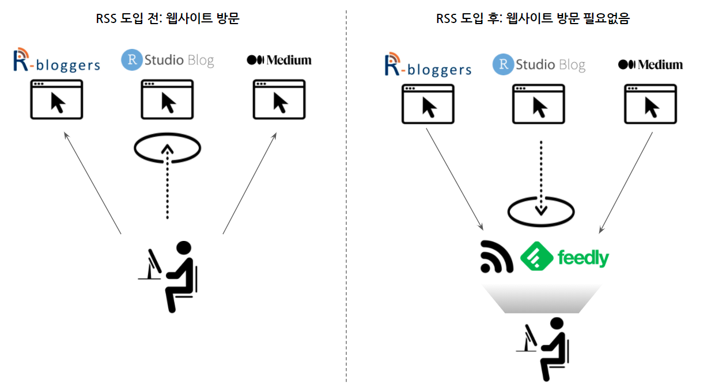

1 RSS
RSS는 원래 RDF Site Summary에서 출발하여 Rich Site Summary, Really Simple Syndication으로 알려진 웹 사용자 혹은 응용프로그램이 온라인 콘텐츠를 가져오게 된 표준규약으로 “자연어 처리”의 중요한 말뭉치(Corpus)의 한 축을 담당하고 있다.

2 RSS 작업흐름1
블로그 글을 기계가 긁어갈 수 있도록 웹사이트에 허락하는 경우 준비된 RSS를 가져오면 된다. 크롬을 사용하게 되면 “RSS Feeds URLs” 플러그인을 사용하게 되면 우측 상단에서 웹사이트에서 바로 RSS Feeds URL을 수집하여 feedly.com에 저장하여 관리하면 된다. 만약, 웹사이트에서 정보를 공개는 하지만 RSS Feeds를 제공하지 않는 경우 politepol.com 에서 수동으로 블로그 글을 추출하여 RSS Feeds URL을 생성시켜 feedly.com에 저장시키 활용하면 된다.
RSS 주소를 한곳 예를 들어 feedly.com 저장해 두게 되면 다음 단계로 이를 다양한 RSS 리더(Reader)를 사용해서 읽으면 된다. feedly.com은 안드로이드 앱도 지원하니 구글 계정을 연결시키면 끝. PC에서는 두가지 방법이 존재하는데 Windows Store에서 Readiy 를 설치하는 방법과 QuiteRSS를 설치하고 feedly.com에서 OPML로 내려받기 해서 이를 QuiteRSS에 연결시키게 되면 콘텐츠를 실시간으로 소비할 수 있다.
3 tidyRSS 헬로월드
RSS를 R에서 가져오는데 tidyRSS 팩키지가 개발되어 수월하게 텍스트 데이터를 가져올 수 있다. RSS 텍스트 데이터를 처리하는 기본 작업 흐름은 다음과 같다. 과거 별도 RSS 팩키지를 사용해야 했지만, tidyRSS가 RSS, Atom, JSON, geoRSS 피드도 받아내는 기능이 있어 feedeR 팩키지를 참조해도 좋을 듯 싶다.
knitr::include_graphics("fig/rss_pkg.png")
RSS 데이터 작업흐름도
https://statmodeling.stat.columbia.edu/ 웹사이트의 블로그 RSS 피드를 tidyRSS 팩키지 tidyfeed() 함수를 사용해서 블로그 텍스트를 가져온다. 가져온 데이터를 tidytext 자연어 처리 흐름에 맞춰 데이터프레임으로 정제하고 ggplot으로 시각화한다.
library(tidyRSS)
library(tidytext)
library(tidyverse)
## RSS 블로그 데이터 가져오기
rss <- tidyfeed("https://statmodeling.stat.columbia.edu/feed/")
DT::datatable(rss)## 텍스트 데이터 전처리
rss_tbl <- rss %>%
unnest_tokens(word, item_title) %>%
anti_join(stop_words) %>%
inner_join(get_sentiments("bing"), by = "word") %>%
mutate(week = lubridate::week(feed_pub_date))
## 감성분석 시각화
ggplot(rss_tbl, aes(x = sentiment)) +
geom_bar(aes(fill = sentiment), colour = "black") +
theme_classic() +
scale_fill_manual(values = c("#616161", "#FFD700"))4 한글 RSS
국내 48곳 언론사/포탈 뉴스 RSS 모음을 통해서 주요 언론사 뉴스 RSS를 받아볼 수 있다.
xmlXPathEval: evaluation failed 오류 발생시 Install libxml2 on Mac OSX을 참조하여 libxml2를 설치하여 해결한다.
> hani_rss <- tidyfeed("http://www.hani.co.kr/rss/")
xmlXPathEval: evaluation failedjoins_rss <- tidyRSS::tidyfeed("http://rss.joinsmsn.com/joins_news_list.xml") 데이터 과학자 이광춘 저작
kwangchun.lee.7@gmail.com